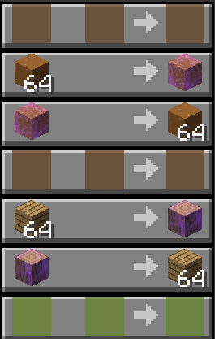

Compressed Items are simple items that you can trade at shopkeepers. These are supposedly always available at the shopkeepers who also trade you Talismans. To compress your items, it will mostly cost you 1 stack of them. Once you have your compressed items, you are able to trade for even better stuff!
